はじめに
Oracle Exadata Database Service on Exascale Infrastructure (ExaDB-XS) は、Oracle Databaseが高い可用性を備えつつ高いパフォーマンスを発揮できるOracle Exadata Database Machine (Exadata)を、より低いエントリーコストでご利用いただけるサービスです。
ExaDB-XSは、Exadata Database Service on Dedicated Infrastructure (ExaDB-D)と同じ強力な自動化機能を使用して VM クラスタとデータベースを管理しますが、物理的なコンピュートとストレージはサービスから抽象化されます。VMクラスタとデータベースをデプロイするだけで、その上で実行されるオラクル管理のインフラストラクチャを意識する必要はありません。
この章では、ExaDB-XSのVMクラスタとデータベースの作成を行います。
前提条件 :
-
VCNの作成
Oracle Cloud Infrastructure チュートリアル を参考に、仮想クラウド・ネットワーク(VCN)の作成が完了していること
-
サービス制限の確認・引き上げのリクエスト
ExaDB-XSを利用するには、まずサービス制限を引き上げる必要があります。サービス制限についてはもしもみなみんがDBをクラウドで動かしてみたら - 第16回 サービス制限についてを参照ください。
注意 チュートリアル内の画面ショットについては Oracle Cloud Infrastructure の現在のコンソール画面と異なっている場合があります
目次 :
1. VMクラスタおよびデータベースの作成
ExascaleインフラストラクチャでのOracle Exadata Database Serviceのプロビジョニングを参考に、ExaDB-XSのVMクラスタを作成し、その上にコンテナ・データベースをプロビジョニングします。
タスク2：コンテナ・データベースのプロビジョニングのステップ3の「データベース・バックアップの構成」でバックアップ保存先を設定します。 その際、デフォルト設定の Autonomous Recovery Service を使用する場合は、 Autonomous Recovery Service (RCV/ZRCV) をセットアップしようを参考に、セットアップを行ってください。 オブジェクト・ストレージを選択する場合は、セットアップ作業は不要です。
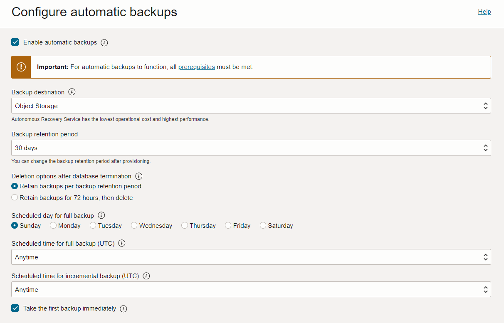
2. DBシステムへのアクセス
-
OCIコンソール・メニューから Oracle Database → Oracle Exadata Database Service on Exascale Infrastructure に移動します。
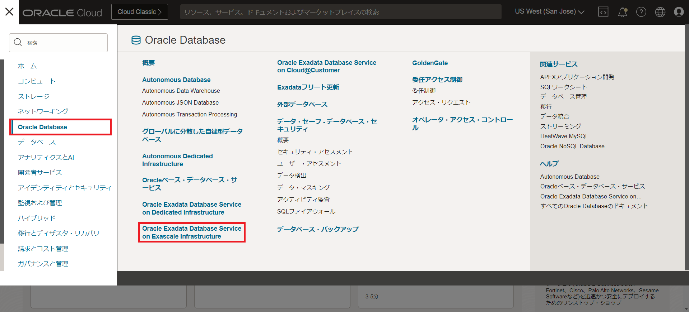
-
1. VMクラスタおよびデータベースの作成で作成したVMクラスタの表示名をクリックします。
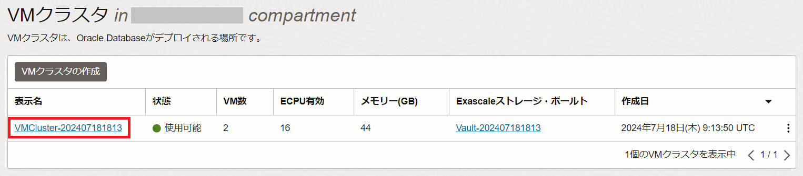
-
リソースの一覧から仮想マシンをクリックします。
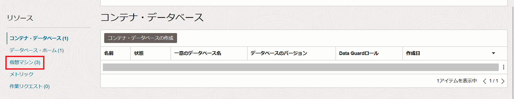
-
接続したいノードのパブリックIPアドレスに表示されているIPアドレスをメモします。
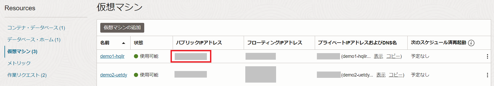
- 任意のターミナルソフトを起動し、以下の情報でssh接続します。
- IPアドレス - 上記ステップで確認したインスタンスの パブリックIPアドレス
- ポート - 22 (デフォルト)
- ユーザー - opc (DBシステムは、接続用に予め opc というユーザーが用意されています)
- SSH鍵 - 1. VMクラスタおよびデータベースの作成で追加した公開鍵と対になる秘密鍵を使用します。
- パスフレーズ - 秘密鍵にパスフレーズが設定されている場合は指定してください。 下記は Tera Term を利用した場合の接続の設定例です。
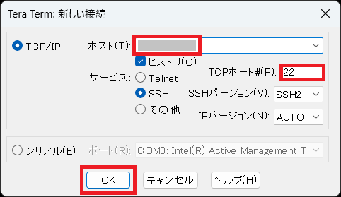
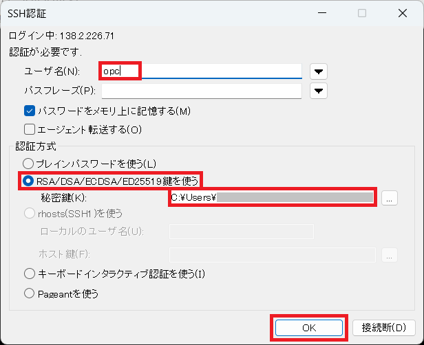
接続が成功すると以下のように表示されます。
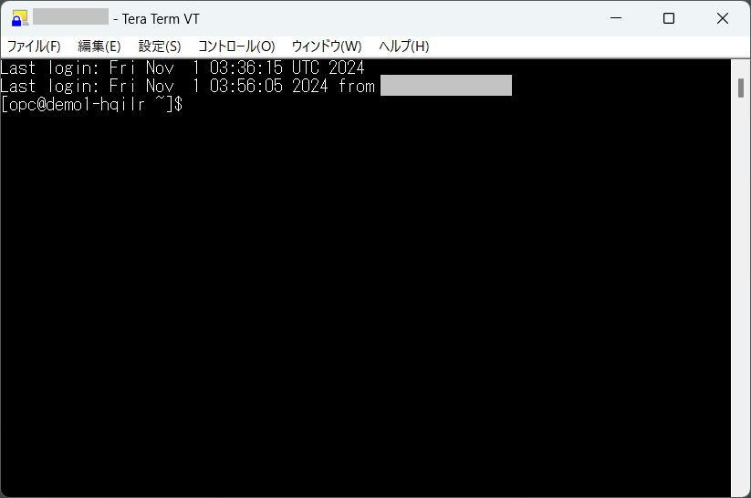
-
oracleユーザーにログインします。
実行コマンド
sudo su - oracle実行例
[opc@demo1-hqilr ~]$ sudo su - oracle Last login: Fri Nov 1 04:06:00 UTC 2024 [oracle@demo1-hqilr ~]$ログアウトせず、そのまま次に進んでください。
3. データベース(PDB)へのアクセス
-
環境変数設定ファイルの読み込み
oracleユーザーのホーム・ディレクトリ(/home/oracle)に環境変数設定ファイルが自動で生成されていて、そのファイルの中身を読み込むことで簡単に環境変数が設定され、データベースの接続が簡素化されます。
以下のように環境変数設定ファイルを確認し、読み込みます。また、環境変数の設定が反映されたか確認します。
実行コマンド
ls . <データベース名> .env env | grep ORACLE実行例
[oracle@demo1-hqilr ~]$ ls DB0720.env [oracle@demo1-hqilr ~]$ . DB0720.env [oracle@demo1-hqilr ~]$ env | grep ORACLE ORACLE_UNQNAME=DB0720_kzw_sjc ORACLE_SID=DB07201 ORACLE_BASE=/u02/app/oracle ORACLE_HOME=/u02/app/oracle/product/23.0.0.0/dbhome_1 ORACLE_HOSTNAME=demo1-hqilr.sub07180912150.vcnsjc.oraclevcn.com -
データベース(CDB)に接続する
以下のコマンドを用いてデータベースのコンテナ・データベース (CDB)に対してsysユーザでSQL*Plusから接続します。
実行コマンド
sqlplus / as sysdba実行例
[oracle@demo1-hqilr ~]$ sqlplus / as sysdba SQL*Plus: Release 23.0.0.0.0 - Production on Fri Nov 1 04:40:20 2024 Version 23.4.0.24.05 Copyright (c) 1982, 2024, Oracle. All rights reserved. Connected to: Oracle Database 23ai EE Extreme Perf Release 23.0.0.0.0 - Production Version 23.4.0.24.05 SQL>接続しているデータベースのデータベース名とコンテナ名を確認します。
実行コマンド
show parameter db_name show con_name実行例
SQL> show parameter db_name NAME TYPE VALUE ------------------------------------ ----------- ------------------------------ db_name string DB0720 SQL> show con_name CON_NAME ------------------------------ CDB$ROOT SQL> -
PDBに接続する
データベース構築時に作成されたPDBを確認し、PDBに接続します。 (PDB$SEEDでない方のPDB名を指定します)
実行コマンド
show pdbs alter session set container = <PDB名> ;実行例
SQL> show pdbs CON_ID CON_NAME OPEN MODE RESTRICTED ---------- ------------------------------ ---------- ---------- 2 PDB$SEED READ ONLY NO 3 PDB1 READ WRITE NO SQL> alter session set container = PDB1 ; Session altered. SQL> -
PDB上にスキーマを作成します。
尚、ここでは便宜上、最低限必要な権限を付与していますが、要件に応じて権限・ロールを付与するようにしてください。
実行コマンド
create user TESTUSER identified by <任意のパスワード> ; grant CREATE SESSION, CONNECT,RESOURCE,UNLIMITED TABLESPACE to TESTUSER ; exit実行例
SQL> create user TESTUSER identified by Welcome1 ; User created. SQL> grant CREATE SESSION, CONNECT,RESOURCE,UNLIMITED TABLESPACE to TESTUSER ; Grant succeeded. SQL> exit SQL> exit Disconnected from Oracle Database 23ai EE Extreme Perf Release 23.0.0.0.0 - Production Version 23.4.0.24.05 [oracle@demo1-hqilr ~]$
4. PDB上のスキーマへのアクセス
-
OCIコンソール・メニューから Oracle Database → Oracle Exadata Database Service on Exascale Infrastructure に移動します。
-
1. VMクラスタおよびデータベースの作成で作成したVMクラスタの表示名をクリックします。
-
データベースの一覧から作成したデータベースの名前をクリックします。
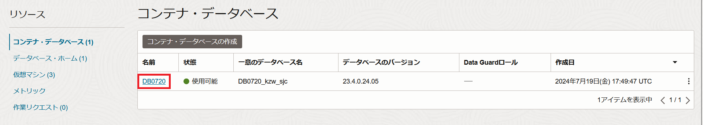
-
リソースの一覧からプラガブル・データベースをクリックします。
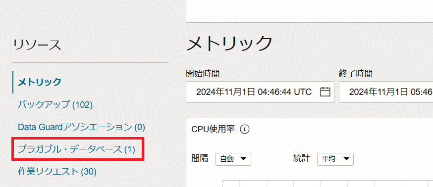
-
プラガブル・データベースの一覧から接続したいPDBの名前をクリックします。
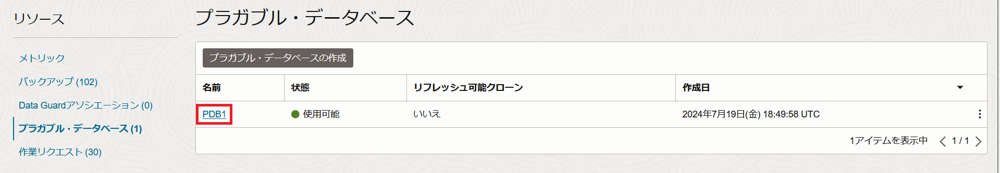
-
PDB接続をクリックします。
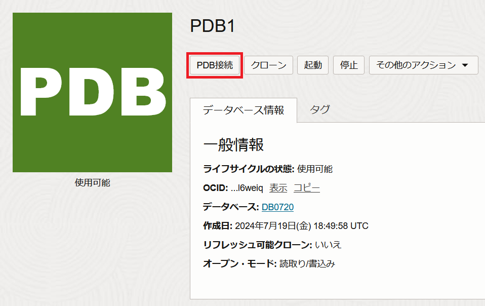
-
簡易接続の接続文字列の右にあるコピーをクリックし、クリップボードに簡易接続文字列をコピーします。 その後、閉じるをクリックし、ダイアログを閉じます。
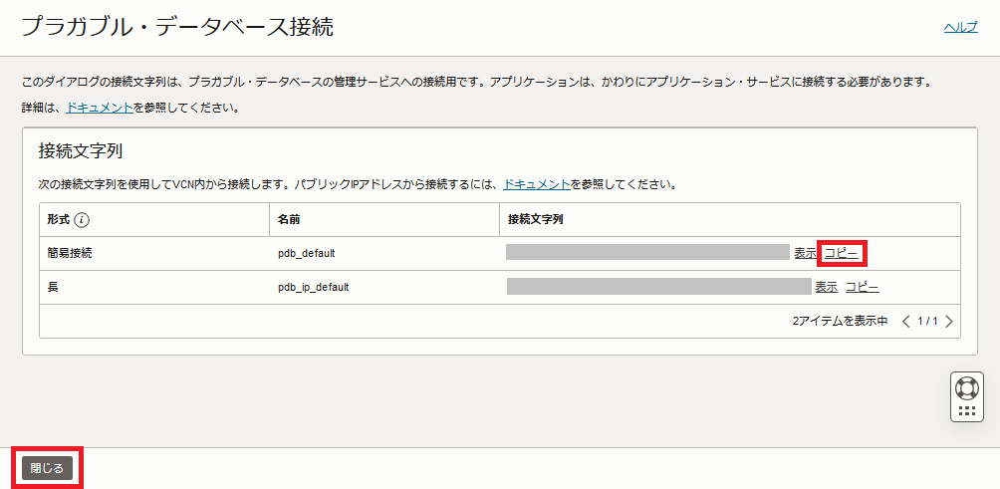
-
DBシステムへアクセスしてoracleユーザとしてログインします。(2. DBシステムへのアクセスを参照ください。)
-
環境変数設定ファイルを読み込みます。(3. データベース(PDB)へのアクセスの1.を参照ください。)
-
PDB上のスキーマに接続します。
実行コマンド
sqlplus <スキーマ名>/<パスワード>@<簡易接続文字列>実行例
[oracle@demo1-hqilr ~]$ sqlplus testuser/Welcome1@<簡易接続文字列> SQL*Plus: Release 23.0.0.0.0 - Production on Fri Nov 1 06:14:44 2024 Version 23.4.0.24.05 Copyright (c) 1982, 2024, Oracle. All rights reserved. Last Successful login time: Mon Sep 02 2024 05:08:30 +00:00 Connected to: Oracle Database 23ai EE Extreme Perf Release 23.0.0.0.0 - Production Version 23.4.0.24.05 SQL> -
接続情報を確認します。
実行コマンド
show con_name show user実行例
SQL> show con_name CON_NAME ------------------------------ PDB1 SQL> show user USER is "TESTUSER"
以上で、この章の作業は完了です。
参考資料
- Oracle Exadata Database Service on Exascale Infrastructureの紹介
- ExascaleインフラストラクチャでのOracle Exadata Database Serviceのプロビジョニング